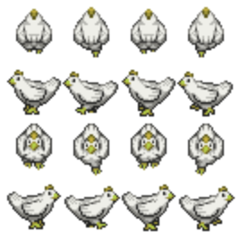
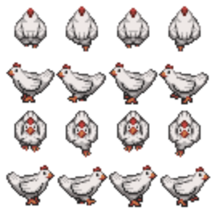
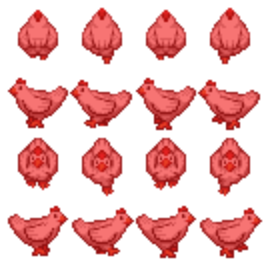

8.6
image-coloring
| (require image-coloring) | package: image-coloring |
This is for doing basic color shifting transformations on image? values. It does this by converting them into bitmaps and operating on the pixels. What is returned is a bitmap. So keep that in mind if you are intending to do operations like scale downstream of, say, a change-hue. If you scale up after the hue shift, you’ll see a blury image. If you scale up before, the color shift will have to operate on more pixels.
procedure
(change-hue amount img) → image?
amount : from-0-to-360? img : image?
Shifts the image’s hue by the given amount.
#lang racket (require image-coloring) (change-hue 50 (circle 40 'solid 'red))
Gives us:
Or:
#lang racket (require image-coloring) (change-hue 50 chicken-sheet)
Gives us:

Whereas the original was:

procedure
(tint-image color img) → image?
color : color? img : image?
Overlays the given color onto non-transparent pixels of img.
#lang racket (require image-coloring) (tint-image "red" chicken-sheet)
Gives us:

Whereas the original was:
TODO: Test and document the other functions in main.rkt